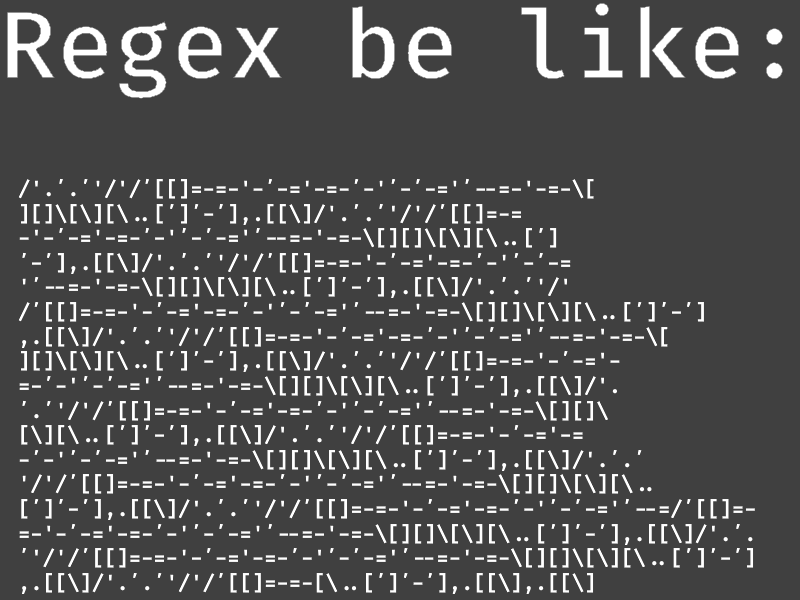

library(tidyverse)
library(ggforce)
# unload MASS since it has select function we don't want to use. Presentation 1: Data Cleaning
In this section, we’ll focus on cleaning a dataset. We’ll primarily use functions from the tidyverse package, but in some cases base R offers quick and effective alternatives.
Load Packages
Load data
We’ll work with two datasets:
df_ov: clinical information for ovarian cancer patients.df_exp: gene expression data for cytochrome genes.
We use the load() function, which automatically imports an R object - let’s have a look at it.
load("../data/Ovarian_data.RData")
class(df_ov)[1] "tbl_df" "tbl" "data.frame"dim(df_ov)[1] 578 22df_ov %>% head() # A tibble: 6 × 22
alt_sample_name unique_patient_ID sample_type histological_type primarysite
<chr> <chr> <chr> <chr> <chr>
1 TCGA-20-0987-01A-… TCGA-20-0987 tumor ser ov
2 TCGA-23-1031-01A-… TCGA-23-1031 tumor ser ov
3 TCGA-24-0979-01A-… TCGA-24-0979 tumor ser ov
4 TCGA-23-1117-01A-… TCGA-23-1117 tumor ser ov
5 TCGA-23-1021-01B-… TCGA-23-1021 tumor ser ov
6 TCGA-04-1337-01A-… TCGA-04-1337 tumor ser ov
# ℹ 17 more variables: arrayedsite <lgl>, summarygrade <chr>,
# summarystage <chr>, tumorstage <int>, grade <int>,
# age_at_initial_path_diagn <int>, recurrence_status <chr>,
# days_to_death <int>, vital_status <chr>, os_binary <lgl>,
# relapse_binary <lgl>, site_of_tumor_first_recurrence <chr>,
# primary_therapy_outcome_success <chr>, percent_normal_cells <int>,
# percent_stromal_cells <int>, percent_tumor_cells <int>, batch <int>class(df_exp)[1] "tbl_df" "tbl" "data.frame"dim(df_exp)[1] 578 12df_exp %>% head()# A tibble: 6 × 12
unique_patient_ID CXCL1 CXCL10 CXCL11 CXCL12 CXCL13 CXCL14 CXCL2 CXCL3 CXCL5
<chr> <dbl> <dbl> <dbl> <dbl> <dbl> <dbl> <dbl> <dbl> <dbl>
1 TCGA-20-0987 4.97 9.91 5.26 5.44 6.55 3.07 5.14 3.72 3.31
2 TCGA-23-1031 3.99 6.61 2.90 6.31 3.18 2.71 5.12 3.76 3.11
3 TCGA-24-0979 3.87 10.0 4.19 4.19 3.36 2.77 7.28 3.88 3.38
4 TCGA-23-1117 3.16 9.24 3.89 9.07 5.10 6.20 5.88 3.50 3.04
5 TCGA-23-1021 3.35 7.86 2.95 5.10 3.41 5.13 5.50 3.69 2.97
6 TCGA-04-1337 6.61 8.41 3.53 6.70 3.91 7.37 6.26 3.56 2.80
# ℹ 2 more variables: CXCL6 <dbl>, CXCL9 <dbl>Understanding the Data
Before jumping into statistics or modeling, we need to think about what scientific question we are trying to answer and get an understanding of the dataset we are working with.
What does each column (variable) represent?
Are the values numeric, categorical, character, or something else?
Are there any missing values, or other data quality issues?
Are there domain-specific rules (e.g., medical standards)?
This will help us get an overview of the data, help you avoid mistakes, and choose the right analysis methods.
Basics
We can get a little reminder of base R and tidyverse functions and explore some basic data characteristics.
Take a look at categorical and numerical variables, access elements in list.
# output: vector
df_ov$vital_status %>%
head()[1] "deceased" "deceased" "deceased" "deceased" "deceased" "deceased"# output: one-column-tibble
df_ov %>%
select(vital_status) %>%
head()# A tibble: 6 × 1
vital_status
<chr>
1 deceased
2 deceased
3 deceased
4 deceased
5 deceased
6 deceased Get a vector the tidyverse way:
df_ov %>%
select(vital_status) %>%
pull() %>%
head()[1] "deceased" "deceased" "deceased" "deceased" "deceased" "deceased"Check for Missing Values
Check which columns contain NA values and how many:
df_ov %>%
is.na() %>%
colSums() alt_sample_name unique_patient_ID
1 0
sample_type histological_type
0 10
primarysite arrayedsite
10 578
summarygrade summarystage
23 15
tumorstage grade
15 23
age_at_initial_path_diagn recurrence_status
10 0
days_to_death vital_status
21 18
os_binary relapse_binary
578 578
site_of_tumor_first_recurrence primary_therapy_outcome_success
279 124
percent_normal_cells percent_stromal_cells
19 25
percent_tumor_cells batch
22 1 #%>% barplot(las=2, cex.names=0.6) # baseR barplot since we are plotting a vectorRemove rows with missing data (careful - this can reduce sample size too much):
df_ov %>%
drop_na()# A tibble: 0 × 22
# ℹ 22 variables: alt_sample_name <chr>, unique_patient_ID <chr>,
# sample_type <chr>, histological_type <chr>, primarysite <chr>,
# arrayedsite <lgl>, summarygrade <chr>, summarystage <chr>,
# tumorstage <int>, grade <int>, age_at_initial_path_diagn <int>,
# recurrence_status <chr>, days_to_death <int>, vital_status <chr>,
# os_binary <lgl>, relapse_binary <lgl>,
# site_of_tumor_first_recurrence <chr>, …Check groups of categorical variables
Counting the number of occurrences for each level of a categorical variable.
Here we count how many dead or alive individuals we have. This is useful for checking balance across groups or categories.
df_ov %>%
select(vital_status) %>%
table(useNA = 'ifany') #%>% vital_status
deceased deceased living living <NA>
281 9 259 11 18 # barplot()Looks like we have two groups of deceased and living. Let’s have a closer look at the unique values of this variable.
df_ov$vital_status %>%
unique()[1] "deceased" "living" "deceased " "living " NA Whitespace includes spaces, newlines, and other blank characters in text. It can cause errors or inconsistencies in data, so removing unnecessary whitespace is an important step in cleaning data. Sometimes, hidden characters or spaces cause misgrouped levels.
Use the str_trim() function to remove whitespace.
str_trim(" Hello World! ")[1] "Hello World!"Trim whitespace and standardize:
Like other function, the str_trim() function can also be used inside the mutate() function to alter the data frame.
df_ov <- df_ov %>%
mutate(vital_status = str_trim(vital_status))Accessing the unique values of the vital_status column. After clean up we only have one group of deceased and living - perfect!
df_ov$vital_status %>%
unique()[1] "deceased" "living" NA Data wrangling and cleaning
Let’s do some cleanup
Drop Variables with Too Many Missing Values
Fix Variable Types
Drop Non-Informative Variables
Recode and Reorder Factors
Create New Variables from existing ones
Step 1: Drop Variables with Too Many Missing Values
- If a variable has more than ~10/30% missing data, it probably won’t be useful. Let’s remove those:
~ mean(is.na(.)) < threshold explained: ~ = “Define a function” . is a placeholder for the input (in this case, a column of the data frame) mean(is.na(.)) calculates the proportion of missing values < threshold returns TRUE or FALSE — which where() uses to decide if a column should be kept
threshold <- 0.2 # 20% threshold
df_ov <- df_ov %>%
select(where(~mean(is.na(.)) < threshold))
head(df_ov)# A tibble: 6 × 17
alt_sample_name unique_patient_ID sample_type histological_type primarysite
<chr> <chr> <chr> <chr> <chr>
1 TCGA-20-0987-01A-… TCGA-20-0987 tumor ser ov
2 TCGA-23-1031-01A-… TCGA-23-1031 tumor ser ov
3 TCGA-24-0979-01A-… TCGA-24-0979 tumor ser ov
4 TCGA-23-1117-01A-… TCGA-23-1117 tumor ser ov
5 TCGA-23-1021-01B-… TCGA-23-1021 tumor ser ov
6 TCGA-04-1337-01A-… TCGA-04-1337 tumor ser ov
# ℹ 12 more variables: summarygrade <chr>, summarystage <chr>,
# tumorstage <int>, grade <int>, age_at_initial_path_diagn <int>,
# recurrence_status <chr>, days_to_death <int>, vital_status <chr>,
# percent_normal_cells <int>, percent_stromal_cells <int>,
# percent_tumor_cells <int>, batch <int>This keeps only the variables that are mostly complete.
Step 2: Fix Variable Types
Some variables are stored as character or numeric when they should actually be factors (i.e., categorical variables). Convert character/numeric columns to factors:
# One by one...
df_ov$sample_type <- as.factor(df_ov$sample_type)
df_ov$primarysite <- as.factor(df_ov$primarysite)
# In one go:
cols_to_factor <- c('sample_type', 'primarysite', 'summarygrade',
'summarystage', 'recurrence_status',
'vital_status', 'tumorstage', 'grade', 'batch')
df_ov <- df_ov %>%
mutate(across(.cols = all_of(cols_to_factor),
.fns = as.factor))
str(df_ov)tibble [578 × 17] (S3: tbl_df/tbl/data.frame)
$ alt_sample_name : chr [1:578] "TCGA-20-0987-01A-02R-0434-01" "TCGA-23-1031-01A-01R-0434-01" "TCGA-24-0979-01A-01R-0434-01" "TCGA-23-1117-01A-02R-0434-01" ...
$ unique_patient_ID : chr [1:578] "TCGA-20-0987" "TCGA-23-1031" "TCGA-24-0979" "TCGA-23-1117" ...
$ sample_type : Factor w/ 3 levels "healthy","tumor",..: 2 2 2 2 2 2 2 2 2 2 ...
$ histological_type : chr [1:578] "ser" "ser" "ser" "ser" ...
$ primarysite : Factor w/ 2 levels "other","ov": 2 2 2 2 2 2 2 2 2 2 ...
$ summarygrade : Factor w/ 4 levels "HIGH","high",..: 2 2 2 2 2 3 2 2 2 2 ...
$ summarystage : Factor w/ 2 levels "early","late": 2 2 2 2 2 2 2 2 2 2 ...
$ tumorstage : Factor w/ 4 levels "1","2","3","4": 3 4 4 3 4 3 3 4 3 3 ...
$ grade : Factor w/ 4 levels "1","2","3","4": 3 3 3 3 3 2 3 3 3 3 ...
$ age_at_initial_path_diagn: int [1:578] 61 60 53 42 45 78 74 73 45 45 ...
$ recurrence_status : Factor w/ 2 levels "norecurrence",..: 2 1 2 2 1 1 2 1 1 2 ...
$ days_to_death : int [1:578] 701 574 1264 1013 1446 61 789 84 2616 816 ...
$ vital_status : Factor w/ 2 levels "deceased","living": 1 1 1 1 1 1 2 1 2 2 ...
$ percent_normal_cells : int [1:578] 16 8 0 0 0 0 12 15 NA 0 ...
$ percent_stromal_cells : int [1:578] 1 5 25 NA 0 36 2 5 NA NA ...
$ percent_tumor_cells : int [1:578] 72 80 72 NA NA 64 84 72 NA NA ...
$ batch : Factor w/ 14 levels "9","11","12",..: 3 3 3 3 3 3 3 3 3 3 ...Step 3: Drop Non-Informative Variables
Let’s check a few categorical variables and remove any that are redundant or irrelevant. If they don’t provide useful or well-curated information, we can drop them:
df_ov$histological_type %>% table().
ser
568 df_ov$primarysite %>% table().
other ov
4 564 target <- c("histological_type", "primarysite")
df_ov <- df_ov %>%
select(!target)Step 4: Re-code and Reorder Factors
Sometimes we want to set the order of factor levels manually, especially if there’s a natural or meaningful order (e.g., “low” → “high”): This helps when plotting or interpreting regression coefficients.
# Summary grade
df_ov$summarygrade %>% table().
HIGH high LOW low
24 456 5 70 df_ov <- df_ov %>%
mutate(summarygrade = fct_recode(summarygrade, "high" = "HIGH"),
summarygrade = fct_recode(summarygrade, "low" = "LOW"))
df_ov$summarygrade %>% table().
high low
480 75 Create New Variables
Now, we would like to create a new data column by extracting specific information or combining other columns.
Step 5: Creating New Variables
Add a column combining other columns into one:
df_ov <- df_ov %>%
mutate(percent_not_cancer_cells = percent_stromal_cells + percent_normal_cells)For character vectors you can use functions paste and paste0 . The paste function concatenates two strings into one. This one is from baseR.
paste('TCGA', 'Data', sep = ' ')[1] "TCGA Data"df_ov <- df_ov %>%
mutate(stage = paste(tumorstage, summarygrade, sep = '-'))
head(df_ov$stage)[1] "3-high" "4-high" "4-high" "3-high" "4-high" "3-low" Create logical variables with ifelse. Adding a column with content based on a condition with ifelse.
df_ov <- df_ov %>%
mutate(dominant_cell_type = ifelse(percent_not_cancer_cells > percent_tumor_cells, "not_cancer_cells", "cancer_cells"))
table(df_ov$dominant_cell_type)
cancer_cells not_cancer_cells
536 9 Extension of ifelse: case_when
df_ov <- df_ov %>%
mutate(group = case_when(age_at_initial_path_diagn < 60 & summarystage == "early" ~ "Early stage - Young",
age_at_initial_path_diagn < 60 & summarystage == "late" ~ "Late stage - Young",
age_at_initial_path_diagn >= 60 & summarystage == "early" ~ "Early stage - Mature",
age_at_initial_path_diagn >= 60 & summarystage == "late" ~ "Late stage - Mature",
.default = NA))
table(df_ov$group)
Early stage - Mature Early stage - Young Late stage - Mature
21 22 245
Late stage - Young
275 String manipulation
Sometimes the information you need is hidden inside longer text strings or encoded in specific patterns — especially in genomics or clinical datasets. In this example we notice that sample type information is unknown for a lot of patients. Since we are TCGA experts, we know that this information is actually encoded in the full sample name TCGA-20-0987-01A-02R-0434-01. But How do we get it out.
To extract and work with this kind of information, we can use what is called a Regular Expression (Regex) and string manipulation tools.
Regex: Regular expression
Regular expressions (regex) are used to search for patterns in text strings. Regular expressions are super flexible and very powerful, BUT they can be slightly confusing at times…
Instead of looking for an exact word like cat, a regex lets you search for things like:
“Any word that starts with ‘c’ and ends with ‘t’”
“Any sequence of digits”
“A word that may or may not have a certain letter”
“A word containing a specific delimiter, e.g. a dash, as comma, etc.”
It might look a little weird (lots of slashes, dots, and symbols), but once you learn a few basics, it’s incredibly useful! And the good thing is that ChatCPT is very good at making regular expressions for you!

We will do string manipulation the tidyverse way: using the stringr package where all the functions starts with str_. These functions often has a parameter called pattern which can take a regular expression as an argument. Let’s start with some simple examples.
Examples
df_ov$alt_sample_name %>% head(n = 1)[1] "TCGA-20-0987-01A-02R-0434-01"Let’s say we want to extract part of the sample name. We can use the str_split_i function to split a string on a given character and access the i’th element.
str_split_i('TCGA-20-0987-01A-02R-0434-01', pattern = '-', i = 2)[1] "20"This grabs the 4th segment in the name string, which might contain the sample code We can apply this to a whole column using mutate() and create a new variable with the extracted values.
df_ov <- df_ov %>%
mutate(sample_code = str_split_i(alt_sample_name, pattern = '-', i = 4))
table(df_ov$sample_code)
01A 01B 01C 01D 11A
539 27 2 1 8 We know that 01 encodes primary tumor while 11 encodes healthy tissue. We can use str_detect() to see if a sub-string contains the 01 or 11.
str_detect(df_ov$sample_code, '01') %>% table(useNA = 'ifany').
FALSE TRUE <NA>
8 569 1 str_detect(df_ov$sample_code, '11') %>% table(useNA = 'ifany').
FALSE TRUE <NA>
569 8 1 Add a column that records TRUE if sample is a primary tumor and place it after the Sample_type column.
'01.{0,1}' explained:
01 — matches the characters ‘0’ followed immediately by ‘1’.
. — matches any single character (A, B, C, X, !, except a newline by default).
{0,1} — is a quantifier, meaning: match the preceding element (the dot .) zero or one time.
df_ov <- df_ov %>%
mutate(sample_code_manual = str_detect(sample_code, '01.{0,1}'),
.after = sample_type)
tail(df_ov)# A tibble: 6 × 21
alt_sample_name unique_patient_ID sample_type sample_code_manual summarygrade
<chr> <chr> <fct> <lgl> <fct>
1 TCGA-24-1852-01… TCGA-24-1852 tumor TRUE high
2 TCGA-29-1692-01… TCGA-29-1692 tumor TRUE low
3 TCGA-13-1817-01… TCGA-13-1817 tumor TRUE high
4 TCGA-61-1916-01… TCGA-61-1916 tumor TRUE low
5 TCGA-29-1704-01… TCGA-29-1704 tumor TRUE high
6 TCGA-13-1819-01… TCGA-13-1819 unknown TRUE high
# ℹ 16 more variables: summarystage <fct>, tumorstage <fct>, grade <fct>,
# age_at_initial_path_diagn <int>, recurrence_status <fct>,
# days_to_death <int>, vital_status <fct>, percent_normal_cells <int>,
# percent_stromal_cells <int>, percent_tumor_cells <int>, batch <fct>,
# percent_not_cancer_cells <int>, stage <chr>, dominant_cell_type <chr>,
# group <chr>, sample_code <chr>We can also replace text patterns:
str_replace_all('TCGA', 'A', 'aaaaaaaaaa')[1] "TCGaaaaaaaaaa"df_ov <- df_ov %>%
mutate(sample_recode = str_replace_all(sample_code, '01.', 'Tumor'),
sample_recode = str_replace_all(sample_recode, '11A', 'Healthy'),
.after = sample_type)
df_ov %>% select(alt_sample_name, sample_code, sample_code_manual, sample_recode) %>% tail()# A tibble: 6 × 4
alt_sample_name sample_code sample_code_manual sample_recode
<chr> <chr> <lgl> <chr>
1 TCGA-24-1852-01A-01R-0808-01 01A TRUE Tumor
2 TCGA-29-1692-01B-01R-0808-01 01B TRUE Tumor
3 TCGA-13-1817-01A-01R-0808-01 01A TRUE Tumor
4 TCGA-61-1916-01A-01R-0808-01 01A TRUE Tumor
5 TCGA-29-1704-01B-01R-0808-01 01B TRUE Tumor
6 TCGA-13-1819-01A-01R-0808-01 01A TRUE Tumor df_ov <- df_ov %>%
select(!c(sample_code_manual, sample_code, alt_sample_name, sample_type))Nicely done!
At this point, we have:
Dropped Variables with Too Many Missing Values
Fixed Variable Types
Dropped Non-Informative Variables
Recoded and Reordered Factors
Created New Variables from existing ones
Joining Dataframes
Often we have information stored in more than one table, and we want to merge these data together into a single dataset. For example, here we would like to join our df_ov and df_exp data table by IDs.
Let’s make a subset of each of the datasets to have a better overview of what is going on.
df_exp_subset <- df_exp %>% arrange(unique_patient_ID) %>% slice(1:5) %>% select(1:5)
df_ov_subset <- df_ov %>% arrange(unique_patient_ID) %>% slice(3:7) %>% select(1:5)
df_exp_subset$unique_patient_ID %in% df_ov_subset$unique_patient_ID %>% table().
FALSE TRUE
2 3 A quick recap of join types from dplyr:
full_join(): all rows from bothinner_join(): only matched rowsleft_join(): all from left, matched from rightright_join(): all from right, matched from left
Full Join
A full join keeps everything — all rows from both df_ov_subset and df_exp_subset. If there’s no match, missing values (NA) are filled in.
df_ov_subset %>%
full_join(df_exp_subset, by = "unique_patient_ID")# A tibble: 7 × 9
unique_patient_ID sample_recode summarygrade summarystage tumorstage CXCL1
<chr> <chr> <fct> <fct> <fct> <dbl>
1 TCGA-01-0631 Healthy <NA> <NA> <NA> 7.70
2 TCGA-01-0633 Healthy <NA> <NA> <NA> 5.16
3 TCGA-01-0636 Healthy <NA> <NA> <NA> 3.27
4 TCGA-01-0637 Healthy <NA> <NA> <NA> NA
5 TCGA-01-0639 Healthy <NA> <NA> <NA> NA
6 TCGA-01-0628 <NA> <NA> <NA> <NA> 3.36
7 TCGA-01-0630 <NA> <NA> <NA> <NA> 3.05
# ℹ 3 more variables: CXCL10 <dbl>, CXCL11 <dbl>, CXCL12 <dbl>Inner Join
An inner join keeps only the rows that appear in both data frames. So if an ID exists in one but not the other, it’s dropped.
df_ov_subset %>%
inner_join(df_exp_subset, by = "unique_patient_ID")Left Join
A left join keeps all rows from df_ov_subset, and matches info from df_exp_subset wherever possible. Unmatched rows from df_ov_subset get NA for the new columns.
df_ov_subset %>%
left_join(df_exp_subset, by = "unique_patient_ID")# A tibble: 5 × 9
unique_patient_ID sample_recode summarygrade summarystage tumorstage CXCL1
<chr> <chr> <fct> <fct> <fct> <dbl>
1 TCGA-01-0631 Healthy <NA> <NA> <NA> 7.70
2 TCGA-01-0633 Healthy <NA> <NA> <NA> 5.16
3 TCGA-01-0636 Healthy <NA> <NA> <NA> 3.27
4 TCGA-01-0637 Healthy <NA> <NA> <NA> NA
5 TCGA-01-0639 Healthy <NA> <NA> <NA> NA
# ℹ 3 more variables: CXCL10 <dbl>, CXCL11 <dbl>, CXCL12 <dbl>Right Join
A right join is the opposite: it keeps all rows from df_ov_subset and adds matching data from df_exp_subset wherever it can.
df_ov_subset %>%
right_join(df_exp_subset, by = "unique_patient_ID")Let’s join our datasets
We will join the two full datasets.
df_comb <- df_ov %>%
left_join(df_exp, by = "unique_patient_ID")Recap
By now, we have:
Loaded and explored clinical and expression datasets
Cleaned whitespace, fixed types, dropped unnecessary variables
Created new columns through logic and string operations
Merged the clinical and expression data for downstream analysis
Your data is now prepped and ready for modeling, visualization, or more advanced statistical analysis.
Your dataset df_comb is now ready for summary statistics and exploratory data analysis (EDA).
save(df_comb, file="../data/Ovarian_comb_clean.RData")